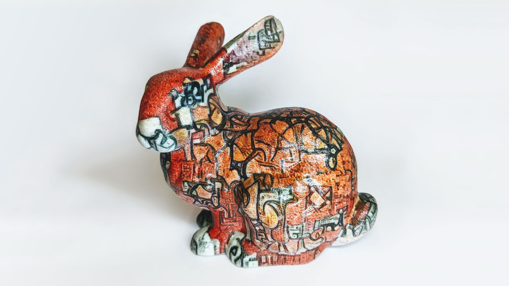

经过训练用于图像分类的神经网络具有一种惊人——且出乎意料的！——生成图像的能力。 DeepDream[[mordvintsev2015inceptionism]]、风格迁移[[gatys2015]]和特征可视化[[olah2017feature]]等技术，正是利用这种能力作为强大工具，来探索神经网络的内部工作机制，并推动了一场基于神经艺术的小型艺术运动。
所有这些技术的工作原理大致相同。 计算机视觉中使用的神经网络对其所观察的图像有着丰富的内部表征。 我们可以利用这种表征来描述我们希望图像具备的属性（例如风格），然后优化输入图像使其满足这些属性。 这种优化之所以可行，是因为网络对其输入是可微分的：我们可以轻微调整图像以更好地符合期望属性，然后通过梯度下降迭代地应用这些调整。
通常，我们将输入图像参数化为每个像素的RGB值，但这并非唯一方式。 只要从参数到图像的映射是可微分的，我们就可以用梯度下降来优化其他参数化方式。
可微分图像参数化促使我们思考：“什么样的图像生成过程是我们能够通过反向传播来优化的？” 答案是相当多，其中一些较为奇特的可能性可以产生各种有趣的效果，包括三维神经艺术、带透明度的图像以及对齐插值。 之前使用特定非寻常图像参数化的工作[[Nguyen2015:easilyFooled,athalye2017synthesizing,olah2017feature]]已经展示了令人兴奋的结果——我们认为，从更宏观的角度审视这一领域，表明其中还蕴藏着更多潜力。
<aside>对于每个演示，我们都提供了一个 Colab 笔记本，以便您可以轻松复现并基于我们的结果进行扩展。</aside>
<p> 不同的参数化方式能够实现许多有趣的效果，包括三维神经艺术、带透明度的图像以及对齐插值。 我们相信，虽然最近的工作已经开始探索其中一些可能性，但我们认为仍存在大量尚未开发的潜力。 </p>
为什么参数化很重要？
改变优化问题的参数化方式可能会显著改变结果，即使实际被优化的目标函数保持不变，这可能看起来令人惊讶。 我们认为参数化选择会产生显著影响的原因有四个：
（1）—— 优化改进 — 将输入进行变换以简化优化问题——这项技术被称为“预条件”（preconditioning）——是优化中的常用手段。 [1] 我们发现，参数化的简单改变能让神经艺术的图像优化变得容易得多。
（2）—— 吸引盆 — 当我们优化神经网络的输入时，通常存在许多不同的解，对应于不同的局部最小值。 [2] 我们的优化过程落入特定局部最小值的概率由其吸引盆（basin of attraction，即优化景观中受该最小值影响的区域）所控制。 已知改变优化问题的参数化方式会改变不同吸引盆的大小，从而影响可能的结果。
（3）—— 额外约束 — 某些参数化方式仅覆盖可能输入的子集，而非整个空间。 在这种参数化下工作的优化器仍会找到最小化或最大化目标函数的解，但这些解会受到参数化本身的约束。 通过选择合适的约束集，可以施加各种约束，从简单约束（例如图像边界必须为黑色），到丰富而微妙的约束。
（4）—— 隐式优化其他对象 — 参数化内部可能使用与它输出的、我们所优化的对象不同类型的对象。 例如，虽然视觉网络的自然输入是RGB图像，但我们可以将其参数化为一个三维对象的渲染结果，并通过渲染过程进行反向传播来优化该三维对象。 由于三维对象比图像具有更多的自由度，我们通常使用随机参数化来生成从不同视角渲染的图像。
在本文的其余部分，我们将给出这些方法有益且能带来令人惊讶且有趣视觉结果的具体例子。
===================================================
对齐的特征可视化插值
<p> 作为一个入门示例，我们来探索<a href="https://distill.pub/2017/feature-visualization/#interpolation">对齐插值神经元可视化</a>是如何创建的。 在本文中，我们经常会优化一个随机初始化的参数化，来生成神经网络中神经元、通道或层所检测到的模式。 我们将此过程的结果称为针对特征可视化目标函数的优化<d-cite key="olah2017feature"></d-cite>，因为它揭示了网络在不同层中所检测的特征。 </p>
特征可视化最常用于可视化单个神经元， 但它也可以用于特征可视化，以研究它们如何相互作用[[olah2017feature]]。 不是优化图像让单个神经元激活，而是优化它让多个神经元同时激活。
当我们想要真正理解两个神经元之间的相互作用时， 我们可以更进一步，创建多个可视化， 逐步将目标从优化一个神经元转向更重视另一个神经元的激活。 这在某种程度上类似于GAN等生成模型在潜在空间中的插值。
尽管如此，仍存在一个小挑战：特征可视化具有随机性。 即使针对完全相同的目标进行优化，每次产生的可视化布局也会不同。 通常这不是问题，但它会削弱插值可视化的效果。 如果我们以朴素方式进行插值，得到的可视化将不对齐： 眼睛等视觉标志在每张图像中会出现在不同的位置。 这种缺乏对齐的情况会使我们更难看清由于目标略有不同所带来的差异， 因为它们被布局上更大的差异所淹没。
如果我们将插值帧作为动画观看，就能看到独立优化存在的问题：
<img class="pointer" src="images/pointer.svg">
<figure class=""> <div style="margin-bottom: 1em;" id='UnalignedInterpolation'></div> <figcaption> 尽管所有图像都是针对同一目标优化的，但眼睛等视觉特征在这些可视化中出现在不同的位置。 这是因为每张图像都从不同的随机初始化开始优化。 </figcaption> </figure>
我们如何实现这种对齐插值，使得视觉标志在帧之间不发生移动呢？ 有几种可能的方法可以尝试 [3] ，其中之一是使用共享参数化：每个帧都被参数化为其自身独特参数化与一个单一共享参数化的组合。
通过在帧之间部分共享参数化，我们鼓励生成的可视化自然对齐。 直观上，共享参数化提供了一个视觉标志位移的共同参考，而独特参数化则根据每个帧的插值权重赋予其自身的视觉吸引力。 [4] 这种参数化不会改变目标函数，但它确实扩大了（2）中可视化保持对齐的吸引盆。 [5]
这是可微分参数化总体上如何成为可视化神经网络的有用补充工具的一个初步示例。
===================================================
使用非VGG架构进行风格迁移
神经风格迁移有一个谜题： 尽管它取得了非凡的成功，但几乎所有的风格迁移都是使用VGG架构的变体完成的[[simonyan2014vgg]]。 这并非因为没有人对在其他架构上进行风格迁移感兴趣，而是因为在其他架构上尝试时效果一直很差。 [6]
人们提出了几种假设来解释为什么VGG比其他模型好得多。 一种解释是VGG的庞大规模使其捕捉到了其他模型丢弃的信息。 这种额外信息对分类没有帮助，但却让模型在风格迁移中表现更好。 另一种假设是其他模型的下采样比VGG更为激进，从而丢失了空间信息。 我们怀疑可能还有另一个因素：大多数现代视觉模型在其梯度中存在棋盘格 artifact[[odena2016deconvolution,olah2017feature]]，这可能使风格化图像的优化变得更加困难。
在之前的工作中，我们发现[[olah2017feature]]。 我们发现同样的方法也能改善风格迁移，使我们能够使用原本无法产生视觉吸引力风格迁移结果的模型：特征可视化
4: 移动“最终图像优化”下方的滑块，比较像素空间中的优化与去相关空间中的优化。两张图像使用相同的目标创建，差异仅在于参数化方式。
让我们更详细地考虑这一变化。风格迁移涉及三张图像：内容图像、风格图像和我们优化的图像。 这三张图像都输入到CNN中，风格迁移的目标函数[[gatys2015]]基于这些图像激活CNN的方式差异。 我们唯一改变的是优化图像的参数化方式。我们不再用像素（与其邻近像素高度相关）来参数化，而是使用缩放傅里叶变换[[olah2017feature]]。
我们的具体实现可以在附带的笔记本中找到。请注意，它还使用了[[olah2017feature]]，而并非所有风格迁移实现都会使用这一技术。特征可视化
===================================================
组合模式生成网络
到目前为止，我们探索的参数化方式都比较接近我们通常对图像的认知，使用像素或傅里叶分量。 在本节中，我们探索通过使用不同参数化来（3）为优化过程添加额外约束的可能性。 更具体地说，我们将图像参数化为一个神经网络[[ulyanov2017deepimageprior]]——特别是组合模式生成网络（Compositional Pattern Producing Network，简称CPPN）[[stanley2007cppn]]。
CPPN是将(x,y)位置映射到图像颜色的神经网络：
(x,y) ~\xrightarrow{\tiny CPPN}~ (r,g,b)
通过将CPPN应用于位置网格，可以生成任意分辨率的图像。 CPPN网络的参数——权重和偏置——决定了生成的图像。 根据为CPPN选择的架构，结果图像中的像素会在一定程度上被约束为与其邻近像素共享颜色。
随机参数可以产生具有审美趣味的图像[[CPPN:random]]，但我们可以通过学习CPPN的参数[[karpathy2014cppns,ha2016cppns]]来生成更有趣的图像。 这通常通过进化算法来完成[[sims1991evolution,stanley2007cppn,Nguyen2015:easilyFooled]]；这里我们探索通过反向传播某个目标函数（例如特征可视化目标）来优化的可能性。 这很容易实现，因为CPPN网络与卷积神经网络一样是可微分的，目标函数也可以通过CPPN传播以相应地更新其参数。 也就是说，CPPN是一种可微分图像参数化——可用于任何神经艺术或可视化任务中参数化图像的通用工具。
将CPPN用作图像参数化可以为神经艺术增添一种有趣的艺术品质，隐约让人联想到光绘（light-painting）。[7] 在更理论的层面上，它们可以被视为对图像组合复杂性的约束。 当用于优化特征可视化目标时，它们会产生具有鲜明特色的可视化图像：
生成图像的视觉质量很大程度上受所选CPPN架构的影响。 不仅网络的形状（即层数和滤波器数量）很重要，所选择的激活函数和归一化方式同样重要。例如，更深的网络会比浅层网络产生更精细的细节。 我们鼓励读者通过改变CPPN的架构来实验生成不同的图像。这可以通过修改补充笔记本中的代码轻松实现。
CPPN生成的模式演化过程本身就是艺术品。 为了延续光绘的比喻，优化过程对应于对光束方向和形状的迭代调整。 由于迭代变化比像素参数化具有更全局的影响，在优化初期只有主要模式可见。 通过迭代调整权重，我们想象中的光束被定位，使得精细细节逐渐显现。

8: CPPN在训练过程中的输出。通过悬停或在移动设备上点击来控制每个视频。
通过玩味这个比喻，我们还可以创造一种新的动画，将上述图像之一变形为另一幅图像。 直观上，我们从一幅光绘开始，然后移动光束来创造另一幅。 这个结果实际上是通过对两个模式CPPN表示的权重进行插值来实现的。然后通过使用插值后的CPPN表示生成图像，产生若干中间帧。 和之前一样，参数的变化具有全局效果，并创造出视觉上吸引人的中间帧。
9: 在两个学习到的点之间插值CPPN权重。
在本节中，我们提出了一种超越标准图像表示的参数化方式。 神经网络（在本例中是CPPN）可以用来参数化针对给定目标函数优化的图像。 更具体地说，我们将特征可视化目标函数与CPPN参数化相结合，创建了具有独特视觉风格的无限分辨率图像。
===================================================
半透明模式的生成
本文中使用的神经网络被训练为接收二维RGB图像作为输入。 是否可能使用相同的网络来合成超出（4）这一领域的产物呢？ 事实证明，我们可以通过让可微分参数化定义一个图像族而非单个图像，并在每个优化步骤中从该族中采样一个或几个图像来实现这一点。 这很重要，因为我们将要探索优化的许多对象，其自由度比输入网络的图像更多。
具体来说，让我们考虑半透明图像的情况。这些图像除了RGB通道外，还有一个alpha通道，用于编码每个像素的不透明度（范围为[0,1]）。为了将这样的图像输入到在RGB图像上训练的神经网络中，我们需要以某种方式折叠alpha通道。一种实现方式是将RGBA图像I叠加在背景图像BG之上，使用标准的alpha混合公式[8]
O_{rgb} ~~=~~ I_{rgb} * I_a ~~+~~ BG_{rgb} * (1 - I_a)
其中I_a是图像I的alpha通道。
如果我们使用静态背景BG（例如黑色），透明度将仅仅表示背景直接贡献于优化目标的像素位置。 事实上，这等价于优化RGB图像，并在颜色与背景匹配的区域使其透明！ 直观上，我们希望透明区域对应于“这个区域的内容可以是任何东西”。 基于这一直觉，我们在每个优化步骤使用不同的随机背景。 [9]
默认情况下，优化我们的半透明图像会使其完全不透明，这样网络总是能获得其最优输入。 为了避免这种情况，我们需要用一个鼓励一定透明度的目标来替换原目标。 我们发现，用以下方式替换原目标是有效的：
\text{obj}_{\text{new}} ~~=~~ \text{obj}_{\text{old}} ~~*~~ (1-\text{mean}(I_a))
这个新目标会自动在原目标\text{obj}_{\text{old}}与减少平均透明度之间取得平衡。 如果图像变得非常透明，它会专注于原目标。如果它变得过于不透明，它会暂时停止关心原目标，转而专注于降低平均不透明度。
11: 针对不同层和单元优化半透明图像的示例。
<p> 特征可视化旨在通过创建能最大程度激活神经元的图像，来理解视觉模型中的神经元在寻找什么。 不幸的是，这些可视化无法区分神经元强烈关注的特征与仅边缘关注的特征 <d-footnote>当优化整个通道时不会出现这个问题，因为此时每个像素附近都有多个接近居中的神经元。因此，整个输入图像会被那些神经元强烈关注的特征的副本所填满。</d-footnote>。 例如，注意这些神经元可视化中心周围的几何结构： </p>
事实证明，生成半透明图像对特征可视化很有用。 特征可视化旨在通过创建能最大程度激活神经元的图像，来理解视觉模型中的神经元在寻找什么。 不幸的是，这些可视化无法区分图像中哪些区域强烈影响神经元的激活，哪些区域仅产生边缘影响。 [10]
理想情况下，我们希望可视化能够区分这种重要性——表示图像某一部分不重要的一种自然方式是让它透明。 因此，如果我们优化带alpha通道的图像并鼓励整体图像透明，根据特征可视化目标不重要的部分就应该变得透明。
===================================================
通过三维渲染实现高效纹理优化
在上一节中，我们能够使用针对RGB图像训练的神经网络来创建半透明的RGBA图像。 我们能否更进一步，创建（4）甚至更远离RGB输入的其他类型对象呢？ 在本节中，我们探索针对特征可视化目标[[olah2017feature]]优化三维对象。 我们使用三维渲染过程将其转换为可以输入网络的二维RGB图像，并通过渲染过程进行反向传播来优化三维对象的纹理。
我们的技术与Athalye等人[[athalye2017synthesizing]]用于创建真实世界对抗样本的方法类似，因为我们依赖于将目标函数反向传播到三维模型的随机采样视角。 我们与现有的艺术纹理生成方法[[kato2017neural3D]]不同，因为我们在反向传播过程中不修改对象的几何形状。 通过将纹理生成与顶点位置解耦，我们可以为复杂对象创建非常精细的纹理。
在描述我们的方法之前，我们首先需要理解三维对象是如何存储并在屏幕上渲染的。对象的几何形状通常保存为相互连接的三角形集合，称为三角网格（triangle mesh），简称网格。为了渲染逼真的模型，需要在网格上绘制纹理。纹理保存为图像，通过所谓的UV映射（UV-mapping）应用到模型上。网格中的每个顶点c_i都关联到纹理图像中的一个(u_i,v_i)坐标。然后通过为每个三角形着色——使用由其顶点(u,v)坐标所界定的图像区域——来渲染模型，即将其绘制到屏幕上。
<p> 您可以使用以下WebGL视图来熟悉这些概念。该视图展示了著名的斯坦福兔子（Stanford Bunny）<d-cite key="turk2005stanfordBunny"></d-cite>的三维模型及其关联纹理<d-cite key="levy2002least"></d-cite>。您可以通过旋转、缩放和平移与模型交互。此外，您可以将对象展开为其二维纹理表示。这种展开揭示了用于在纹理图像中存储纹理的UV映射。请注意，纹理被分成多个块，从而实现对对象的完整且无失真覆盖。 </p> <d-figure id="BunnyModel"></d-figure>
创建三维对象纹理的一种简单朴素方法是按常规方式优化图像，然后将其作为纹理绘制到对象上。 然而，这种方法生成的纹理没有考虑底层的UV映射，因此会在渲染对象中产生各种视觉 artifact。 首先，渲染纹理上会看到接缝，因为优化过程不知道底层的UV映射，因此不会沿着纹理分割的块一致地优化纹理。 其次，生成的模式在对象的不同部分随机定向（例如垂直和弯曲的模式），因为它们没有在底层的UV映射中保持一致的方向。 最后，生成的模式缩放不一致，因为UV映射没有在三角形区域与其在纹理中的映射三角形之间强制一致的比例。
13: 著名的斯坦福兔子三维模型[[turk2005stanfordBunny]]。您可以通过旋转和缩放与模型交互。此外，您可以将对象展开为其二维纹理表示。这种展开揭示了用于在纹理图像中存储纹理的UV映射。请注意，基于渲染优化的纹理被分成多个块，从而实现对对象的完整且无失真覆盖。
我们采取了不同的方法。 我们不是直接优化纹理，而是通过三维对象的渲染结果（即用户最终会看到的那些）来优化纹理。 下图展示了所提出流程的概览：
我们以傅里叶参数化随机初始化纹理开始这一过程。 在每次训练迭代中，我们采样一个随机相机位置（朝向对象包围盒中心），并将带纹理的对象渲染为图像。 然后我们将所需目标函数（即神经网络中感兴趣的特征）的梯度反向传播到渲染图像上。
然而，渲染图像的更新并不直接对应于我们希望优化的纹理更新。因此，我们需要进一步将变化传播到对象的纹理上。 这种传播可以通过应用逆UV映射来轻松实现，因为对于屏幕上的每个像素，我们都知道它在纹理中的坐标。 通过修改纹理，在后续优化迭代中，渲染图像将融入前几次迭代中应用的变化。
15: 纹理是通过优化特征可视化目标函数生成的。 纹理中的接缝几乎不可见，且模式方向正确。
最终的纹理沿着分割处被一致地优化，因此消除了接缝，并为渲染对象强制实现了统一的定向。 此外，由于函数优化与对象的几何形状解耦，纹理的分辨率可以任意高。 在下一节中，我们将看到这个框架如何被复用于对对象纹理进行艺术风格迁移。
===================================================
通过三维渲染对纹理进行风格迁移
现在我们已经建立了一个高效反向传播到UV映射纹理的框架，我们可以用它来将现有的风格迁移技术适配到三维对象上。 与二维情况类似，我们的目标是用用户提供的图像风格重新绘制原始对象的纹理。 下图展示了该方法的概览：
该算法的工作方式与上一节介绍的方法类似，从随机初始化的纹理开始。 在每次迭代中，我们采样一个朝向对象包围盒中心的随机视点，并渲染它的两个图像：一个使用原始纹理（内容图像），另一个使用我们当前正在优化的纹理（学习到的图像）。
在内容图像和学习图像被渲染之后，我们针对Gatys等人[[gatys2015]]提出的风格迁移目标函数进行优化，并按照上一节介绍的方法将参数化映射回UV映射的纹理中。 然后重复这一过程，直到目标纹理中获得 desired 的内容与风格的混合。
17: 对各种三维模型进行风格迁移。请注意，内容纹理中的视觉标志（如眼睛）在生成的纹理中正确出现。
由于每个视角都是独立优化的，优化过程被迫在每次迭代中尝试添加所有风格元素。 例如，如果我们使用梵高的《星空》作为风格图像，那么星星会在每个视角中都被添加。 我们发现，通过引入对之前视角风格的某种“记忆”，可以获得更令人满意的结果（如上面展示的那些）。 为此，我们维护最近采样视点的风格表示Gram矩阵的移动平均值。 在每次优化迭代中，我们针对这些平均矩阵计算风格损失，而不是针对该特定视角计算的矩阵。 [11]
生成的纹理结合了期望风格的元素，同时保留了原始纹理的特征。 以使用梵高《星空》作为风格图像创建的模型为例。 生成的纹理包含了梵高作品特有的富有节奏且有力的笔触。 然而，尽管风格图像主要使用冷色调，但生成的毛皮却带有温暖的橙色底调，因为它保留自原始纹理。 更有趣的是，当应用不同风格时，兔子的眼睛是如何被保留的。 例如，当风格来自梵高的画作时，眼睛被转化为星状漩涡；而当使用康定斯基的作品时，它们则变成抽象图案，但仍能让人联想到原始的眼睛。

使用所提出方法生成的带纹理模型可以轻松用于流行的三维建模软件或游戏引擎。为了展示这一点，我们将其中一个设计3D打印成了真实世界的物理 artifact[12]。
===================================================
结论
对于有创造力的艺术家或研究者来说，存在一个巨大的图像参数化空间可用于优化。 这不仅打开了截然不同的图像结果的大门，还包括动画和三维对象！ 我们认为本文所探索的可能性只是冰山一角。 例如，人们可以探索将三维对象纹理的优化扩展到优化材质或反射率——甚至朝着Kato等人[[kato2017neural3D]]的方向，优化网格顶点位置。
本文重点关注可微分图像参数化，因为它们易于优化且涵盖了广泛的应用范围。 但使用强化学习或进化策略[[wierstra2014naturalEvolutionStrategies,salimans2017evolution]]来优化不可微分或仅部分可微分的图像参数化当然也是可能的。 使用不可微分参数化可能会为图像或场景生成打开激动人心的新可能性。
<p> 最后，我们认为对参数化的深思熟虑的使用在其他优化问题中也可能有用，从而对结果提供额外的控制。 例如，降维通常被表述为关于点位置的优化问题； 虽然每个点通常被参数化为简单的位置，但也可以轻松使用其他参数化方式。 这可能加速降维过程，或者成为对齐多个相关降维结果的工具。 当然，人们在许多领域（例如神经网络）中都会非常仔细地思考他们所优化对象的参数化方式；我们只是认为值得更普遍地考虑这一点。 这种更一般化的参数化使用在某种程度上类似于预条件和自然梯度。 </p>
<aside>WIP，可能删除此段</aside>